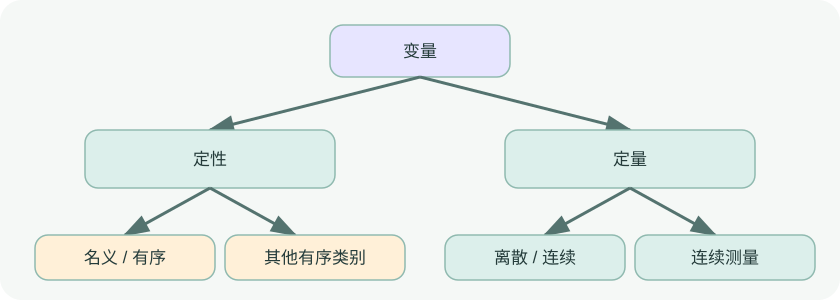

统计分析的第一步不是选择公式，而是弄清楚数据究竟测量了什么。浏览器类型、满意度评分、摄氏温度和收入看起来都能写成数字，但它们允许的比较和运算并不相同。
想象一下，你正准备分析用户满意度，手里有一份5分制的评分数据。你能直接算它的平均值吗？能对它做t检验吗？答案可能没你想的那么简单。这就像你拿到了一把扳手，却要去拧一个十字螺丝——工具和数据类型不匹配，这是菜鸟最容易犯的错误之一。

2.1 数据的四种测量尺度
在统计学中，我们根据数据携带的信息量，把它分成四个层次。这个分类叫做Stevens测量尺度，是心理学家Stanley Smith Stevens在1946年提出的。
| 测量尺度 | 定义 | 示例 | 允许的运算 |
|---|---|---|---|
| 名义（Nominal） | 仅用于分类，没有顺序 | 性别、民族、省份、浏览器类型 | 计数、众数 |
| 有序（Ordinal） | 有顺序，但间距不等 | 教育程度、满意度评分、排名 | 计数、众数、中位数 |
| 等距（Interval） | 间距相等，但无绝对零点 | 温度（摄氏/华氏）、年份 | 加减、均值、标准差 |
| 等比（Ratio） | 有绝对零点，可比值 | 身高、收入、时间（时长） | 所有运算，包括乘除 |
这个层级结构非常关键：高层次的尺度可以做低层次的所有分析，但反过来不行。比如，等距数据可以算众数，但名义数据不能算均值。
⚠️ 常见错误：很多人在面对"李克特量表"（比如1-5分的满意度评分）时，直接把它当作等距数据来处理——算平均分、做t检验、跑线性回归。严格来说，李克特量表是有序数据，"非常满意"和"满意"之间的差距不一定等于"满意"和"一般"之间的差距。学术界对此争论了几十年，我的建议是：在样本量较大（比如n>30）且分布比较对称的情况下，勉强可以当作连续数据来处理，但要在报告中说明这一假设。
2.2 定性数据与定量数据的区别
如果你觉得四种尺度有点复杂，我们可以先从最简单的二分法入手：定性（Qualitative） vs 定量（Quantitative）。
定性数据是描述性质的，比如眼睛颜色、行业类别、用户性别。定量数据是数值性质的，比如收入、年龄、点击次数。
在定量数据内部，又可以分为：
- 离散数据（Discrete）：可数且取值有限。比如一个家庭的孩子数量（0,1,2,3...），一个页面上的按钮点击次数。
- 连续数据（Continuous）：理论上可以取任意值。比如身高（可以是170.11cm）、温度（36.5°C）、反应时间（0.312秒）。
这个区别在实际分析中很重要。当你处理离散数据（尤其是计数数据）时，很多连续数据的假设（比如正态分布）就不太适用了。比如，用户点击次数通常是符合泊松分布的——我们会在第7章详细讲。
在Python中，我们可以用pandas快速检查数据的类型和基本结构：
import pandas as pd
import numpy as np
# 模拟一份混合类型的数据
data = pd.DataFrame({
'user_id': range(1, 101),
'gender': np.random.choice(['男', '女'], 100),
'age': np.random.randint(18, 65, 100),
'education': np.random.choice(['高中', '本科', '硕士', '博士'], 100,
p=[0.2, 0.4, 0.3, 0.1]),
'income': np.random.normal(15000, 5000, 100).round(0),
'score_5': np.random.choice([1,2,3,4,5], 100, p=[0.05,0.1,0.3,0.35,0.2])
})
# 用 dtypes 查看每列的数据类型
print("=== 数据类型 ===")
print(data.dtypes)
# 用 describe() 看数值列的分布
print("\n=== 数值列描述 ===")
print(data.describe())
# 用 value_counts() 看分类列
print("\n=== 教育程度分布 ===")
print(data['education'].value_counts())
# 输出解析：
# user_id int64 → 等比（离散）
# gender object → 名义
# age int64 → 等比（离散）
# education object → 有序
# income float64 → 等比（连续）
# score_5 int64 → 有序（注意：不一定是等距的！）2.3 横截面、时间序列与面板数据
除了数据类型，我们还需要了解数据的结构。按时间维度划分，数据有三种常见形态：
| 数据结构 | 定义 | 示例 | 常见分析方法 |
|---|---|---|---|
| 横截面数据 | 同一个时间点，多个个体 | 2026年Q1全国各省GDP | 回归分析、聚类 |
| 时间序列数据 | 同一个体，多个时间点 | 某股票过去100天的收盘价 | ARIMA、指数平滑 |
| 面板数据 | 多个个体，多个时间点 | 100家上市公司5年的财务数据 | 固定效应、随机效应 |
新手最常犯的错误是把时间序列数据当成横截面数据来处理。比如你想分析气温和冰淇淋销量的关系，拿了北京365天的每日数据——这是时间序列。如果你直接跑一个普通线性回归，忽略了时间依赖性和季节性，你的p值会严重偏小，结论完全不可靠。
💡 经验之谈：区分横截面和时间序列有一个简单的方法：看你的数据能不能打乱顺序。如果打乱顺序后分析结果应该不变，那就是横截面数据。如果和顺序有关（比如今天的数据依赖于昨天的数据），那就是时间序列。面板数据则兼有两者特征，分析时更复杂但也更强大。
2.4 抽样方法
在第一章我们提到，很多时候我们不能研究整个总体，只能从总体中抽取样本。那怎么抽才能保证样本有代表性呢？这里介绍四种基本抽样方法：
简单随机抽样
每个个体被选中的概率相等。就像抓阄一样。这是最基础的方法，优点是无偏、理论成熟，缺点是如果总体很大（比如全中国的用户），实施成本高。
分层抽样
先把总体按某些特征分成若干"层"（比如按年龄段），然后在每一层内随机抽样。优点是保证各层都有足够的样本量，能提高估计精度。
整群抽样
把总体分成若干"群"（比如班级、社区），随机抽取几个群，然后调查群内的所有个体。优点是实施成本低，缺点是估计精度可能降低。
系统抽样
按一定间隔抽样。比如从名单中每隔10个人抽一个。优点是操作简单，缺点是有可能存在周期性偏差（比如名单是按夫妻对排列的）。
| 抽样方法 | 优点 | 缺点 | 适用场景 |
|---|---|---|---|
| 简单随机抽样 | 无偏、理论完备 | 实施成本高 | 总体规模不太大时 |
| 分层抽样 | 精度高、保证覆盖 | 需要分层信息 | 总体有明显分层特征 |
| 整群抽样 | 成本低、易实施 | 精度可能较低 | 地理上分散的总体 |
| 系统抽样 | 简单、省时 | 可能有周期偏差 | 名单有序排列时 |
2.5 好数据与坏数据：抽样偏差
数据质量中最致命的问题不是"数据不干净"，而是抽样偏差（Sampling Bias）。简单来说，就是你的样本不能代表总体。这里有几种常见的偏差形式：
- 选择偏差：抽样过程中某些群体被系统性地排除
- 无应答偏差：被选中的人拒绝参与，而拒绝者和应答者可能有系统差异
- 幸存者偏差：只观察了"幸存"下来的样本，忽略了那些"消失"的
- 志愿者偏差：自愿参与的人和一般人群可能有系统差异
- 确认偏差：在数据分析中有意无意地寻找支持自己假设的证据
📖 经典案例：1936年Literary Digest总统选举民调
1936年，美国《Literary Digest》杂志进行了一次史上规模最大的总统选举民调。他们寄出了1000万份问卷，收到了240万份回复。基于这个庞大的样本，他们预测共和党候选人Alf Landon将以57%对43%击败民主党总统Franklin Roosevelt。
最终选举结果：Roosevelt以62%对38%大获全胜。Digest的预测错了整整24个百分点。
问题出在哪？抽样偏差。Digest的电话样本和汽车登记记录排除了当时绝大部分低收入群体——而这些人恰恰是Roosevelt的坚定支持者。样本量再大（240万！），如果样本本身有偏差，结果一样是灾难性的。
这个事件也催生了现代民意调查的诞生——George Gallup用仅3000人的样本就正确预测了Roosevelt获胜，因为他用了配额抽样法保证了样本的代表性。
⚠️ 大数据时代的警示：很多人以为"数据量大"就等于"数据质量好"，这是天大的误解。Literary Digest的240万份问卷已经证明了这一点。在互联网时代，你网站上的用户行为数据只代表"用了你网站的人"，不代表你的目标用户全体。每当有人说"我们数据量很大所以结论可靠"的时候，你首先应该问的是：你的数据从哪里来？能代表谁？
聊完了数据的类型、结构和来源，下一章我们进入统计学的核心实操领域——描述统计。我们要学习如何用一个数字来概括整堆数据的特征，以及为什么有时候这个数字会骗人。
这个变量允许什么运算？
选择一个变量，观察它的测量尺度及分析时需要注意的边界。
教学模拟：用于理解概念与方向，不替代真实数据分析、正式功效计算或研究设计审查。
TAKEAWAYS
本章要记住的三件事
- 数据的编码形式不等于测量尺度：用数字编码的类别仍可能是分类变量。
- 有序尺度能比较顺序，但相邻等级之间不一定等距。
- 数据类型和研究设计共同决定可用的统计方法。
FURTHER READING
延伸阅读与核对来源
参考来源用于核对概念与方法。涉及具体数据、历史细节或行业案例时，应回到原始研究或官方文档逐项核验。